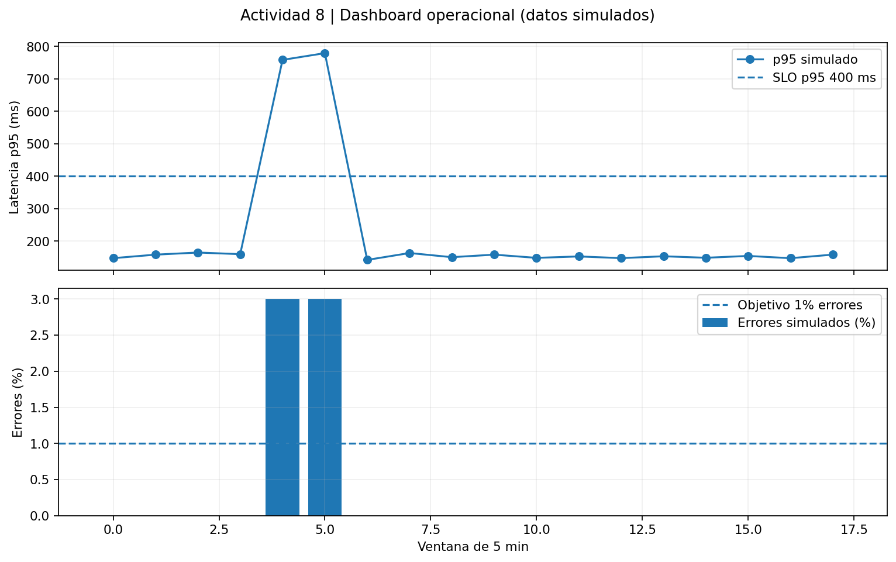
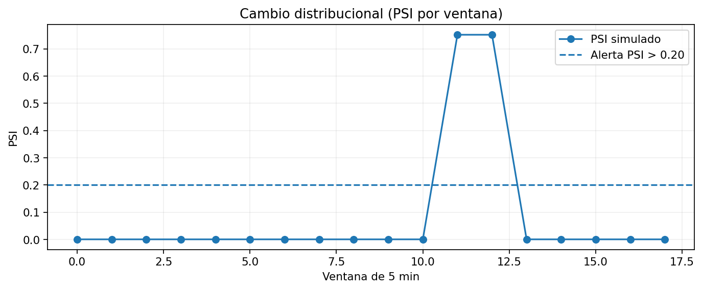

Simulación académica reproducible. No son mediciones de una API en producción.


INC-001 P1: latencia alta, reversión simulada de configuración. INC-002 P2: PSI, revisión humana y ticket de reentrenamiento simulado.
Fuente: scripts/simulate_monitoring.py, semilla 42. No es un panel en vivo ni prueba de producción.